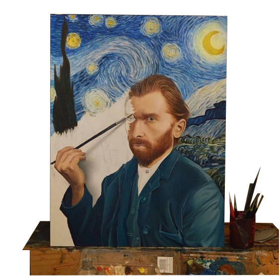

Dalle origini rinascimentali al ritratto fotografico contemporaneo

Più spesso di quanto si pensi, l'arte si collega imprevedibilmente a ciò che vediamo e facciamo tutti i giorni.
Un esempio? Vi siete mai chiesti quale fosse l'origine del selfie?
Cos'è l'autoritratto?
L'autoritratto è un sottogenere ritrattistico che da sempre affascina artisti e fruitori grazie alla sua capacità di lasciare una traccia concreta della figura dell'autore, non solo in quanto "copia" del suo aspetto fisico, ma anche e soprattutto in quanto portatore di valori, carattere, storia personale ed emozioni: è una sorta di firma su tutta la produzione di un artista.
Col passare dei secoli esso ha subito continue modificazioni in caratteri e significato, fino ad oggi, quando potremmo anche considerare lo stesso "selfie" un autoritratto contemporaneo.